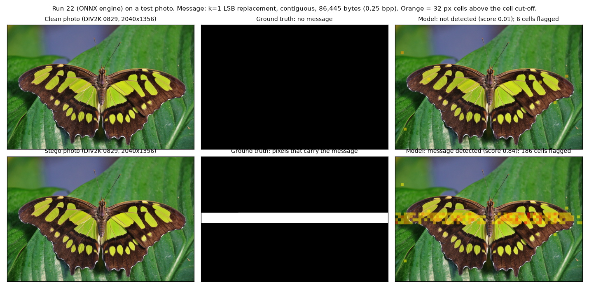
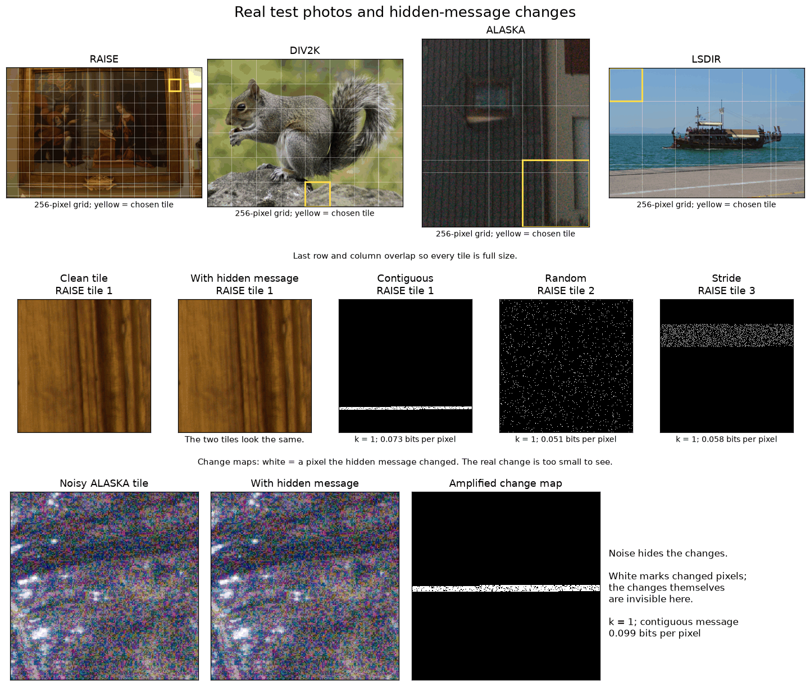
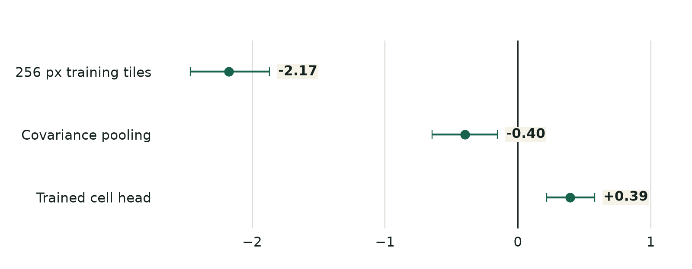
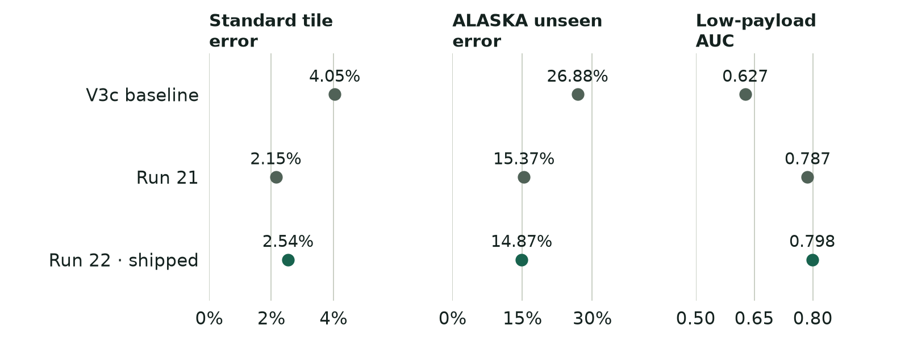
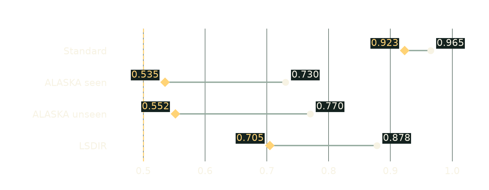
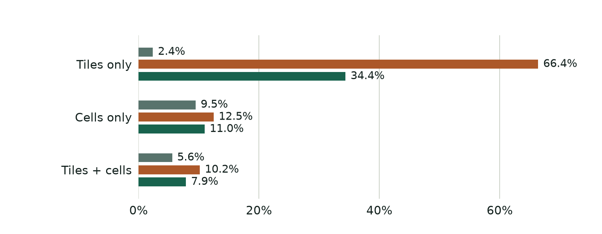
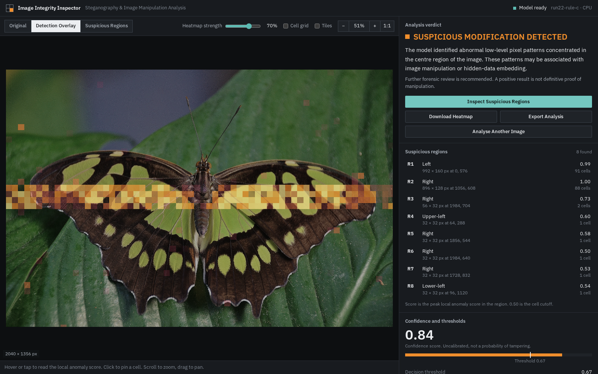

AAI3001 / Computer Vision and Deep Learning
Finding hidden messages in photographs
A convolutional network for colour LSB steganalysis and localisation.

AAI3001 team project
The problem / Least significant bits
One intensity step can carry a bit
Each red, green or blue channel has 256 possible values. Changing its lowest bit can leave the photograph looking identical.
The detector looks for small changes in the noise statistics. Camera noise can hide the same signal.
One example pixel channel
1001001010010011Spatial-domain LSB steganalysis
Dataset / Four photo collections
31,100 source photos, split by photo

Paired training examples
A seeded generator embeds a fresh message into a copy of a clean tile. Its mask identifies which 32 px cells contain changed pixels.
Held-out sources and cameras
Every tile from one photo stays in the same split. Training excludes DIV2K and eight ALASKA2 camera models.
Yellow squares mark sample tiles
Method / Run 22
One network answers “whether” and “where”
RGB tile
256 × 256 pixels at original resolution
SRM filters
30 fixed filters per colour produce 90 noise maps
Wide XuNet
An 8 × 8 grid with 256 feature channels
Average and covariance pooling
One score per 32 × 32 px cell
Run 21 learned to classify paired tiles. Run 22 added 15 epochs of joint training on tile labels and changed-cell masks.
638,611 trainable parameters
Evaluation / Frozen benchmarks
Three questions need three tests
| Question | Test material | Measure |
|---|---|---|
| Does a tile carry a message? | 10,944 clean/stego pairs from 249 RAISE and DIV2K photos | Standard tile error and AUC |
| Where are the changes? | 128 test tiles with a contiguous message for the localisation comparison | Within-tile ranking of changed cells |
| Should a photo be flagged? | 576 photos, each clean and with 12 embedded variants | Photo false alarms and misses |
Validation data set the thresholds. Confidence intervals resample whole photos, keeping their tiles together.
2,000 photo-bootstrap resamples
Results / Tile detection
Tile error varies by image source
Standard tile error
3.1% false alarms
2.0% misses
0.9971 AUC
Balanced tile error by source
Balanced error (PE) = (false-alarm rate + miss rate) / 2
Model history / Ten models on the same tests
Moving to 256 px tiles cut error the most
Matching the test tile size
Reducing training tiles from 512 to 256 px matched the test size and cut standard error by 2.17 percentage points.

Whiskers show 95% paired photo-bootstrap intervals for each change.
Model comparison / Frozen tile tests
Which model would you deploy?
Why the team chose run 22
Run 21 had the lowest standard error. Run 22 ranked low-payload messages best, produced a heatmap and met both whole-photo deployment targets.

Low-payload AUC pools 3,024 one-bit pairs across ALASKA seen, ALASKA unseen and LSDIR.
Stress test / One-bit, low-payload messages
Noise can push detection close to chance
Interpreting the noisy subset
An AUC of 0.50 means chance ranking. On seen ALASKA cameras, AUC fell from 0.730 across low-payload tiles to 0.535 on the noisy subset.

1,008 pairs per condition · low payload = 0.05–0.15 bits per pixel
Localisation / DIV2K test photo 0829
The heatmap follows the embedded band
On this photograph
An 86 kB contiguous message raised the photo score from 0.01 to 0.84.
Across 128 contiguous-message tiles
Changed cells outranked unchanged cells with a mean per-tile AUC of 0.864.
One-bit embedding at 0.25 bits per pixel
Whole-photo decision / Rule C
Combining tiles and cells cut photo misses
The whole-photo trade-off
Adding cell evidence reduced misses from 66.4% to 10.2%. False alarms rose from 2.4% to 5.6% of clean photos.

576 test photos · lower rates are better · combined-rule AUC 0.967
Deployment / Image Integrity Inspector
From an upload to regions for review

CPU deployment
ONNX Runtime matched all 21,888 PyTorch tile decisions and ran 1.7–2.3× faster on the benchmark CPU.
Cloud GPU
A 2–3 MP image took 0.27 s on the L4 versus 2.10 s on the VM’s CPU. All 50 test verdicts agreed.
The FastAPI service processes uploads in memory
Conclusion / Interpreting the detector
A flag gives an analyst somewhere to look
What the evidence supports
On the tested photos, the combined rule flagged 5.6% of clean images and missed 10.2% of images carrying messages. Each verdict needs human interpretation.
Where to improve
Tiny payloads in noisy photos remain difficult. We propose broader training sources, source-specific calibration and a separate JPEG-domain detector.
References
Detection and localisation
- Fridrich & Kodovský (2012). Rich Models for Steganalysis of Digital Images. IEEE TIFS.
- Xu, Wu & Shi (2016). Structural Design of Convolutional Neural Networks for Steganalysis. IEEE Signal Processing Letters.
- Deng et al. (2019). Fast and Effective Global Covariance Pooling Network for Image Steganalysis. ACM IH&MMSec.
- Zhou et al. (2016). Learning Deep Features for Discriminative Localization. CVPR.
Photo collections
- RAISE · Dang-Nguyen et al. (2015). RAISE – A Raw Images Dataset for Digital Image Forensics. ACM Multimedia Systems.
- DIV2K · Agustsson & Timofte (2017). NTIRE 2017 Challenge on Single Image Super-Resolution: Dataset and Study. CVPR Workshops.
- ALASKA2 · Cogranne, Giboulot & Bas (2020). ALASKA#2: Challenging Academic Research on Steganalysis with Realistic Images. IEEE WIFS.
- LSDIR · Li et al. (2023). LSDIR: A Large Scale Dataset for Image Restoration. CVPR Workshops.